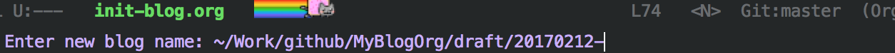
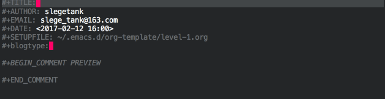

Blog With Emacs
为什么
为什么要用emacs写博客呢？网上有很多封装的很好的博客网站，提供了简单且丰富的编辑功能。对于我来说，理由有如下几点：
- 作为一个emacser，org mode写文章驾轻就熟
- emacs是org mode最好的编辑器，而用org mode写文章简直是一种享受
- 只有纯文本的保存方式才是可靠的；别的博客网站会出问题，而静态的博客页绝不会
- 对于程序员来说，简单纯粹的文本记录方式才是我们追求的
因此，用emacs写博客对我来说是一种需要。
资料
- wiki: http://orgmode.org/worg/org-blog-wiki.html
关于用org mode发布博客的你想知道或不想知道的信息都在这里了。 - 好文章，我借鉴了很多
http://bastibe.de/2013-11-13-blogging-with-emacs.html - 好文章，我借鉴了很多
https://ogbe.net/blog/blogging_with_org.html
例子
这里列出一些emacser博客的例子，以备查阅。
基础
用emacs写博客的实质就是编写org mode文件，然后通过emacs导出成为静态网站。因此，首先需要用户熟练使用org mode编写文档；当然，如果懂得elisp就可以做更多的自定义配置。
博客的发布是通过ox-publish这个库完成的，其中核心是org-publish-project-alist 这个alist; 关于博客发布的基础知识参照这里； 具体的例子可以参看我的emacs博客配置 。
我的
结构
整个博客站的结构是这样的：
| draft | 存放草稿 |
| org | 存放已发布的org |
| static | 存放图片、css等静态资源 |
| template | 存放网页固定头部等模板html |
| index.org | 首页 |
| archive.org | 按照时间排序的页面 |
| tag.org | 按照分类排序的页面 |
自定义sitemap
在使用中，我发现自己还是需要一个自定义的sitemap的–emacs提供的默认sitemap太简单了。自定义只要将函数名传入到":sitemap_function"，在生成网站的时候会自动调用。函数的原理很简单，就是遍历org目录下的所有文章，取到我们需要的文章属性信息，例如title/link/date等；然后将这些信息插入到一个指定的org文件里，例如作为首页的index.org或者sitemap.org，然后利用emacs将其导出成html。其中，对于每篇文章的preview的想法来自这里 。
自定义功能
初始化(bi - blog init)
我的博客文章都有如下共性：
- 文件名为“时间戳+文章名.org”。
- 草稿文件保存在draft文件夹里。
- 文章具有一个通用的头部：
TITLE: 这个需要我自己填写
AUTHOR: 这个可以自动生成
EMAIL: 自动生成
DATE: 自动取到当前时间
SETUPFILE: 自动生成
BLOGTYPE: 文章的类型，需要我自己选
PREVIEW: 需要我自己填
因此，文章在初始化（bi）时，只需要我填写文件名:

就会将文件自动生成在draft文件夹里，并且会自动生成默认的头部信息；其中，TITLE/PREVIEW需要手动填写，而blogtype可以按s-left/s-right从org文件夹中已经存在的文章的type里进行选择。

这样，文章的初始化就完成了。
草稿发布(bp - blog publish)
草稿的发布就是将org文件从draft拷贝到org文件夹。这个命令就做了这件事，顺便问一下是否要将博客commit一下。
博客生成(bc - blog commit)
我将org文件的导出以及commit做了一个整合，变成了这个命令。也就是将org文件导出生成html文件，然后使用固定格式的message提交更改。这样看起来提交的记录会变得非常整洁：
插入图片
在org中插入图片用手输入的话太麻烦了，从这里 我学到了可以通过拖拽的方式添加图片的链接。我做了一点修改：当发现当前org文件为博客文章时，将会自动把图片拷贝到static文件夹下，按照命名规则命名并递增序号，并且将相对路径添加到文件里。完美！
结语
用了上面的配置之后，用org mode写文档变得相当享受。Happy hacking。